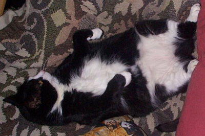
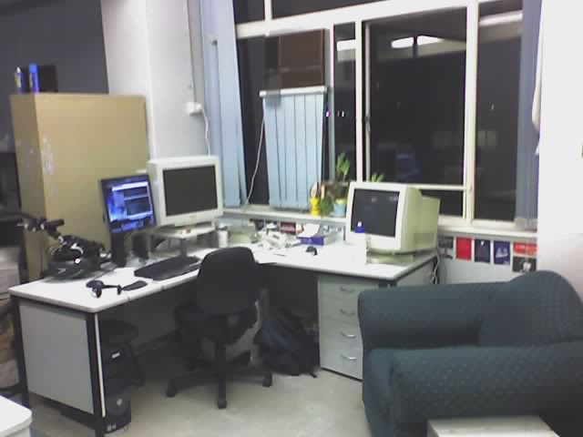
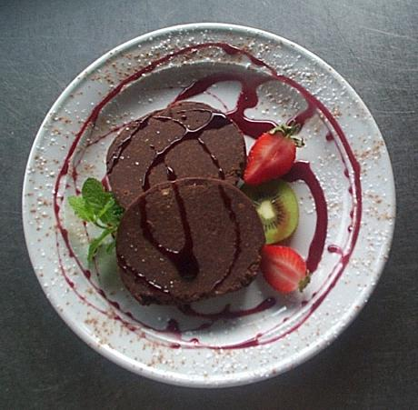

Photos
Miscellaneous snapshots of things. I am going to make thumbnails when I get a moment...
This is a photo from my back porch at sunset.

The beautiful Poppet, Irenes cat who I lived with for many years at her voluptuous best.
This is a photo from my back porch during one amazing red sunset. Can't remember why the sky was so red, but glad I got a picture of it.
I grew some Lebanese Eggplants from seedling. Here are a couple that ended up in a curry and a yummy pasta :)
This is the very friendly, sweet and tailless Roti who was my nextdoor neighbours cat. They didn't pay him much attention so I tried to make up for that a bit. When he moved out they asked me if I knew anyone who wanted him, and I would have taken him if it weren't for his love of chasing the lizards around my house. He is called Roti because one day I was making Roti's on the kitchen bench (which he theoretically wasn't allowed on). I caught him jumping up and put him down, and looking at the Roti I was making there was a single perfect paw print in the middle :)
This is Slim. When we first saw him he was basically a starving to death kitten, very scared and following another kitty who used to visit us called Beebee. He had no owner and Irene started feeding him and he became very fond of us, much to Poppy our actual cats annoyance. I think his difficult life never really let him settle into domesticity and he was a bit wild. Finally I caught him with a snake in the backyard, I seperated them and bought Slim inside, and he immediately ran out the cat door and finished the job before I could stop him. That was that and I took him to the pound....ahh so very sad, he had this very loud repetitive meow and hearing that at his most distressed as I walked away was a bit much for me.
Me and my friend Paul at a retro party...dig those shades. Paul and I met whilst I was at uni and with pool, computers, music and beer in common have been friends since. He's currently trying to teach me how to pick up girls, of which I am a very poor student :)
How geeky is this? Me standing in front of the oldest still intact big computer (or something like that) in the world at the Melbourne Museum.
This is some of my friends from university, taken at Huongs birthday party. She was from Vietnam and is now married with a lovely little girl. Silavanh is in the back row and she is from Laos, and last I heard she was pregnant too! They both invited me to their weddings though I couldn't go. The hugging couple in the front are Jane and Nghi and I did go to their wedding, which was great but I had a few too many ales and felt pretty bad the next day. Mr Nishchal Kush at the front has just told me to expect a wedding for himself in Fiji, so I think if I can I will finally have to go overseas for a wedding. The others in the photo are the lovely Serene (always liked her name) and the amiable Sheewa.
A bit hard to make out. This is my great grandfather on my fathers side at Gallipoli, where he fought for the British Forces.
Theres a pub around the corner that is being knocked down or renovated so they can put in a temple of car enabled consumerism with 1000 movie screens. Some cool group of people have been culture jamming it, this is my favourite one.
Took a photo of this cool graffiti in Berlin.
Another neighbourhood kitty that became friends with me. I liked her a lot because she didn't chase the native animals (that I could tell) and she moved in for a few days at one stage. Anyway she has moved away now but she was a welcome visitor for a couple of years, and I would always be pleased when I saw her flitting across my balcony to the back door.

My desk at UQ taken with my phone cam. You can see where I put my bike, my lovely dual 19" screens and the famous "Cumfy Chair".
Photo of the vegan restaurant Irene and I owned for about 14 months. It made more money than I did whilst we owned it, but it was too much work for Irene so we eventually sold it.
The kitchen of Squirrels where Irene worked her magic.

Some of our dishes. I took these photos with my digital camera and some of them turned out really well.